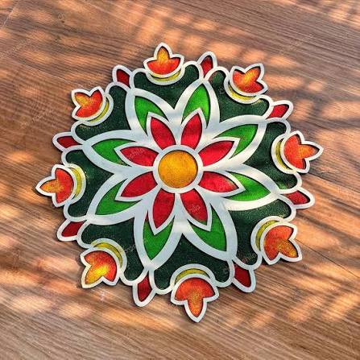

Our mission
To make hand-drawn floor art and craft an ordinary, affordable part of daily Indian homes — not a one-off luxury hired once in a decade of years.
About the studio
Rangoli Rang began in 2014 as one woman drawing her mother’s kolam every single morning before sunrise. Today the same practice runs a small, deliberately unhurried studio — and the grid has not changed.




The artist’s story
Priya Raghunathan learned the eight-loop kolam from her grandmother in Madurai, on a floor of wet cow-dung plaster, correcting the same four mistakes for two years. When she moved to Bengaluru in 2011 for work, she kept drawing — first for her own apartment, then for neighbours, then for a wedding hall in Malleswaram that has since rebooked her every year.
The studio was never built to scale. It was built so the work could stay hand-made: the same eight people who sketch your design are the people who lay the powder. Nothing is printed from a template, nothing is outsourced to a WhatsApp group of vendors at 4 AM.
That constraint is also the reason for the queue. We take a limited number of orders per week because each one gets a drawn sketch, a conversation, and a floor that is checked before we leave.
12
Years of drawing
3,400+
Floors designed
90+
Grids archived
46
Since 2018
What we stand on
To make hand-drawn floor art and craft an ordinary, affordable part of daily Indian homes — not a one-off luxury hired once in a decade of years.
A regional studio network that keeps the kolam tradition documented — every grid archived, every technique taught, every material sourced is used.
Only natural material. Rice flour, sieved stone powder, turmeric, vermilion, indigo, sandalwood, real petals. No acrylic colour, no plastic dust, no chemical dye.
Only hand-drawn. Every pattern starts as a counted grid drawn with a stick, then free-hand. A stamped or printed pattern is not a kolam, and we will tell you so.
The long way round
2014
A word-of-mouth run drawing freehand kolam for eleven neighbours in Domlur. No website, no pricing list — just a chalk board of timings on the building gate.
2017
A wedding in Yelahanka needed a mandala larger than any drawn before. Six people, one night, and the first version of the scaled grid plan the studio still uses today.
2020
With events cancelled, the crew began teaching live online and shipping material kits. The workshops are now the second half of the business.
2023
A tech park in Manyata asked for the same lobby medallion every quarter. That became a retainer format — fixed grid, fixed palette, fixed installation window each festival.
The craft, up close
The reason our floors hold their shape for days is unglamorous: preparation, measurement and timing. We do all three before a single dot is placed.

Step 01
The surface is swept, wiped and measured in feet. Grid pitch is calculated from the actual space, never from a stock chart.
Step 02
A stick-drawn chalk grid is laid and counted aloud. This is where the symmetry is decided — and where most mistakes are prevented.
Step 03
Rice flour and stone powder are sieved twice for a fine, non-grainy line. Colours are mixed by hand in small batches to keep the tone even across the whole floor.
Step 04
Free-hand from the counted grid — no stencils, no printed sheets. The artist who sketched your design is the one drawing it.
Step 05
Petals, diyas, banana leaf or a marigold border if the design calls for it. Nothing is fixed to the floor, so nothing is left behind.
Step 06
The floor is swept, photographed and the scaled grid plan saved — so the same design can be redrawn exactly next Diwali.
Materials & dedication
Every material is food-grade or garden-grade. If a toddler can crawl through it, so can a toddler eat it. We source powder from two family-run mills in Mysuru and flowers from the same vendors who supply the market near our studio.
Studio visits are welcome on weekday mornings — the wall of archived designs is easier to see in person than to describe.